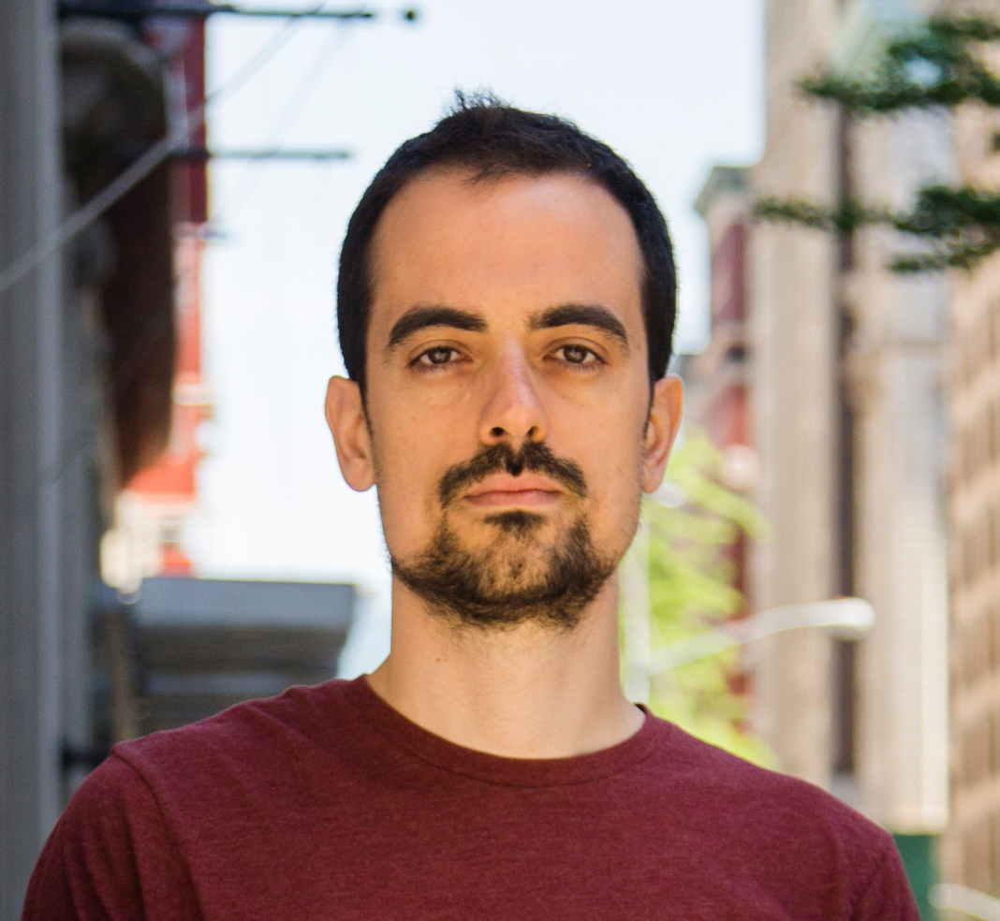
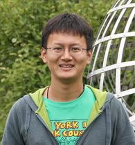

People
Core faculty
Afonso S. Bandeira
Assistant Professor, Department of Mathematics and Center for Data Science.

Joan Bruna
Assistant Professor, Department of Computer Science, Center for Data Science and Mathematics (affiliated).

Carlos Fernandez-Granda
Assistant Professor, Department of Mathematics and Center for Data Science.
Postdocs

Shuyang Ling (Aug 2017 - )
Courant Instructor; compressive sensing, convex optimization, computational harmonic analysis

Soledad Villar (Jun 2017 - )
Moore-Sloan Research Fellow; optimization, probability, topology and data.
Augustin Cosse (Oct 2016 - Sep 2017)
Postdoc; Tensor methods, inverse problems.
Students
Alex Nowak (Sep 2016 - Aug 2017 )
Visiting Student; deep learning, harmonic analysis.
Thomas Moreau (Jan 2017 - Mar 2017)
Visiting Student; high-dimensional statistics, machine learning.
Affiliated faculty
Gerard Ben Arous
Professor, Mathematics, Courant Institute.
Xi Chen
Assistant Professor, IOMS, Stern School.
Sinan Gunturk
Professor, Department of Mathematics, Courant Institute.
Eyal Lubetzky
Associate Professor, Mathematics, Courant Institute.
Andy Majda
Professor, Department of Mathematics and Climate, Atmosphere and Ocean Science, Courant Institute.
Adi Rangan
Associate Professor, Department of Mathematics, Courant Institute.
Eero Simoncelli
Silver Professor, Neural Science, Mathematics and Psychology;
Investigator, Howard Hughes Medical Institute.
Esteban Tabak
Professor, Department of Mathematics, Courant Institute.
Eric Vanden-Eijnden
Professor, Department of Mathematics, Courant Institute.